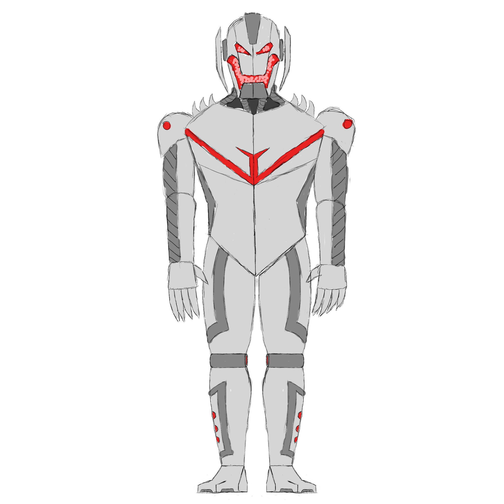

Out of all the places I currently miss the most, it isn’t just my town or just my house. I specifically miss my den I made in the family room of my house. If you could hear the sound of the heater rattling, I would most likely be there, laying next to it while heat was blasting right at me. You could taste the heat pouring out of the heater. A couple of pillows would be propped up so I can lay my head while a blanket would shield me from the heat on my left so it doesn’t burn my skin. All of this was crammed right behind one of my mom’s crafting shelves, which was perfect to prop my phone so I can watch videos. The space is just barely big enough for me to squeeze into, making a very crammed but cozy space. I would always eat all of my snacks in my den, so it reeked of popcorn and doritos. There would be many afternoons where I would lay in my den, put on a YouTube video, and fall asleep from the heat and my full stomach. I would even take my sleep machine out there some nights and sleep there. My parents would always find me laying there asleep. It was strange, but I loved it. It was a place I could relax and not have to worry about anything. My parents found it frustrating at times, since instead of sitting there, I should’ve been doing important tasks like homework or chores. It didn’t matter to me though. It was one of the few places that made me feel content. The den got a huge upgrade when I got my laptop. I was always disappointed that I couldn’t sit in my den and play games or do work on my computer. I had to go into my room to do that. The biggest issue I had with my room was that it would always be really hot. It’s nice during the winter, but during summer break, it isn’t very pleasant being there. When I got my laptop though, I finally could do all the things I wanted to while still laying in the den. I remember going to my den and booting up my laptop as soon as I got it. I miss my den a lot, since there isn’t anything that really comes close to that here. My loft kinda reminds me of it, but it’s just because of how little space I have up there, which I like. I can’t really shove myself into a wedge though. It’s a shame, but I had to let go of it sooner than later since I won’t get to have that anymore. I hope in the future I can find something similar to that though. If I get an apartment or house in the future, one of the biggest things I’ll be looking for is where would be the best place to set up my den. Only then will I re-experience true bliss.
.png)

Homepage Contact Us